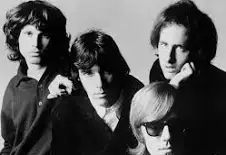

The Doors

The Doors var ett amerikanskt psykedeliskt rockband som bildades 1965 i Venice, Los Angeles och var aktivt till mars 1973. Bandet bestod av sångaren Jim Morrison (1943–71), trumslagaren John Densmore, gitarristen Robbie Krieger och keyboardisten Ray Manzarek.[2] På studioinspelningarna medverkade ett flertal basister, men någon basist var aldrig formellt medlem i The Doors.
Gruppnamnet togs från Aldous Huxleys bok The Doors of Perception, vars titel var tagen från ett citat av William Blake. Gruppen var under 1960-talets senare del och början av 1970-talet en av USA:s populäraste rockgrupper, men de väckte också ilska i USA:s konservativa led då Morrisons utspel, utmanande texter och uppträdande på scen ansågs kontroversiella och uppmuntrade till uppror.